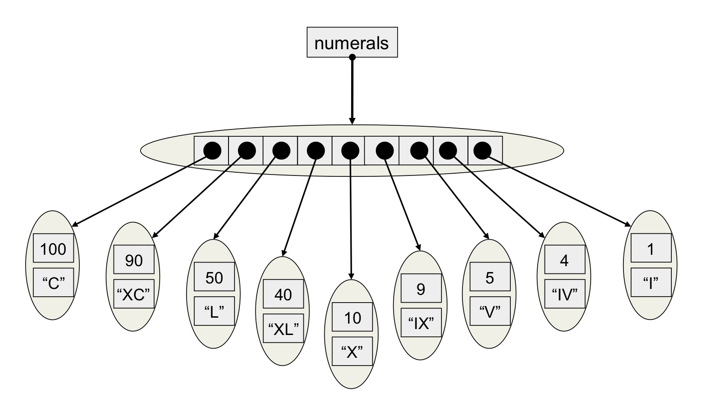
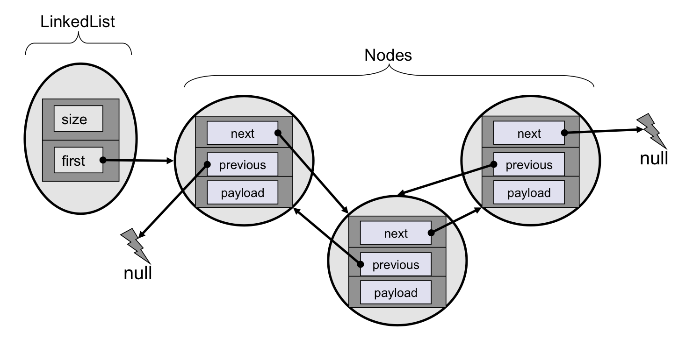

Attempt to complete the code in the startup package so that your application prints a pyramid,
based on a size supplied by the user.
Hint: for the first row the number of spaces is always 'height-1' and for each following row the
number of spaces goes down by one and the number of hashes up by two.
#
###
#####
#######
#########
###########
Advanced Version: Try to implement the same functionality with recursion i.e. your code should not contain any loops.
For Experienced Developers: Try to write a Unit Test for the code.
Complete the code in the starter class by iterating over the 2d array supplied. For each box in the array print a character using the supplied key:
Take a new line at the end of each sub-array. If successful you should see a compu-cow as below
(__) / ( ( ______ | /\_| | \ | |___ | | | ---@ |_______| * | | ---- | | \ | |_____ | | \|________| | |
Advanced Version: If you used normal loops try and rewrite the code using a Java 5 foreach loop or vice-versa.
The sample code contains 7 strings, referenced by data1 to data7. Complete the test function so that it correctly identifies if a string is a palindrome. Note that a palindrome reads the same in both directions after disregarding spaces and punctuation. The output of your program should be similar to that listed below:
"A man, a plan, a canal, Panama" is a Palindrome "Gold is where you find it" is NOT a Palindrome "If I had a hi-fi" is a Palindrome "Fortune favors the prepared mind" is NOT a Palindrome "Rats live on no evil star" is a Palindrome "There is no abstract living" is NOT a Palindrome "Some men interpret nine memos" is a Palindrome
Hint: Examine the methods of the String class closely in the Javadoc
Advanced Version: Try to find another way of solving the problem. For example if your code modified the strings try to write a version that does not, and vice versa.
Incrementally uncomment the code in the starter class (repeated below). You will need to write a Student class which:
Student s1 = new Student("Joe Bloggs","Philosophy",3,new double[] {65.4,66.5,72.2});
Student s2 = new Student("Jane Smith","Architecture",2,new double[] {56.4,68.7});
DecimalFormat df = new DecimalFormat(".00");
System.out.println(s1);
System.out.println("\t With current average of: " + df.format(s1.average()));
System.out.println(s2);
System.out.println("\t With current average of: " + df.format(s2.average()));
Advanced Version 1: Try to integrate the formatting code into the average method. Also consider the encapsulation issues involved in storing a reference to an array that is already referenced by the client code. Use the Javadoc to try and work out how to create a copy of the array.
Advanced Version 2: Search the web to work out how to create an array of unmodifiable / final values (hint - its a trick question).
Create a GraduateStudent class which extends from the Student class you built in the previous exercise. The class should have an appropriate constructor, extra fields (such as teachingHours and supervisor) and an enhanced toString method.
Using the code in the starter class write a program which converts integers into roman numerals. Use the conversion table below:
| Integer Value | String Value |
|---|---|
| 100 | C |
| 90 | XC |
| 50 | L |
| 40 | XL |
| 10 | X |
| 9 | IX |
| 5 | V |
| 4 | IV |
| 1 | I |
The design you should use and the conversion process you should follow are illustrated below:
Advanced Version 1: Avoid lots of typing by writing a unit test.
Advanced Version 2: The typical first solution is very procedural and poorly encapsulated. Try to enhance the OO quality of your design.
Advanced Version 3: Take advantage of Java 5 enums to simplify your code.
The sample code creates a GUI containing a blank window of type MyPanel. Try to create the same functionality as the solution by:
Advanced Version 1: Enhance your code so the circle follows the cursor when you drag the mouse.
The sample code implements a linked list data structure which can add and remove single items. The existing code has been developed using TDD, with the tests placed in LinkedListTest. The design is illustrated below:
Try to enhance the code so that the test method multipleItemsCanBeRetrieved passes.
Advanced Version: Using a tests-first approach try to add a remove method to the list. For
example the call myList.remove(4) should remove the fifth item from the list.
Hint: there are at least six conditions to consider:
The sample code reads a text file and writes it to the console. Enhance the code so that the input is also
written to an output file.
Hint: Check the Javadoc for a way to write newlines in a platform independent
way and remember to close the output.
You have been provided with the skeleton classes ChatClient and ChatServer. Try to implement a
client-server chat system whereby users can exchange messages.
Hint: remember to flush each message so it
is sent to the other machine immediately.
The code in the Launcher class reads URL's from the user and adds them to the end of a BlockingQueue. Try to write a LoadingThread class that asynchronously reads from the queue, loads the associated resource and saves it as a file into the output folder. The file names should be out1.html, out2.html etc...
Advanced Version: Create a new version of the application. Instead of using a queue the main thread should create a task for each URL entered and submit it to a thread pool.